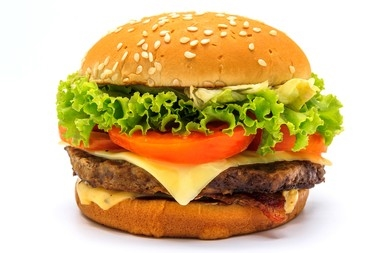

Cheeseburger

Description
A cheeseburger is a hamburger topped with cheese. Traditionally, the slice of cheese is placed on top of the meat patty.
As with other hamburgers, a cheeseburger may include toppings such as lettuce, tomato, onion, pickles, bacon, mayonnaise, ketchup, and mustard.
Ingredients
- 1 Hamburger Bun
- 2 ounces (55g) ground beef rolled into a ball
- 1 slice of American cheese
- Pepper and salt
- Desired condiments and toppings
Steps
- Add desired condiments and toppings to whichever bun you want.
- Preheat pan over high heat for 2 minutes.
- Place ball of beef onto pan, and smash down with spatula.
- Season with salt and pepper to your liking
- Allow patty to cook until top is turning pale pink/gray in spots.
- Flip the patty, and place slice of cheese on top of it.
- Allow patty to cook until thoroughly browned.
- Remove the patty from the pan, and place it in the bun.
- Enjoy!